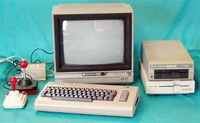
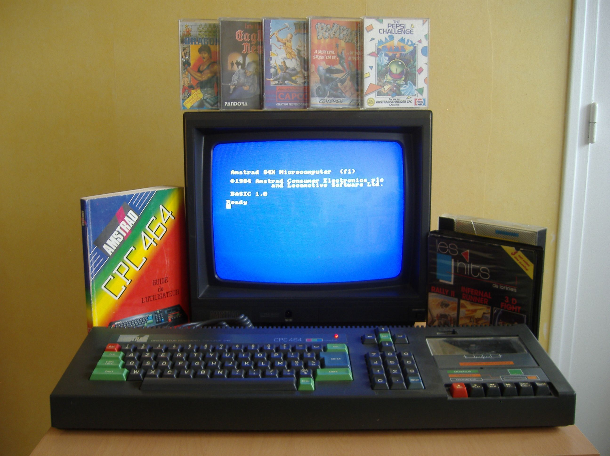

MS-DOS (Microsoft Disk Operating System) fue un sistema operativo desarrollado por Microsoft, ampliamente utilizado en computadoras personales entre principios de los años 80 y mediados de los 90.
- Lanzamiento: 1981.
- Interfaz: Basada en línea de comandos, sin entorno gráfico nativo.
- Arquitectura: Soportaba procesadores Intel x86.
- Ficheros: Usaba sistemas de archivos FAT12/FAT16, con un límite de 8 caracteres para nombres de archivos.
- Compatibilidad: Amplio soporte para aplicaciones y juegos de su tiempo, como Doom, Prince of Persia y Wolfenstein 3D.